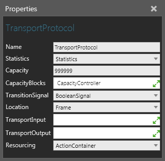

A Transport Protocol allows you to handle transportation actions requested by resources using a Python Script.

| Name | Description |
| Name | Defines the name of the protocol. |
| Statistics | Defines a Statistics behavior that collects statistics generated by the protocol. |
| Capacity | Defines the amount of components the transport container can contain at any given time. |
| CapacityBlocks | Defines a list of Capacity Controller behaviors for globally defining the transport container's capacity. Generally, a Capacity Controller is used as a variable for controlling the capacity of one or more containers in order to avoid deadlock situations. |
| TransitionSignal | Defines a Boolean Signal behavior that signals the arrival and departure of components to and from the transport container. A True value signals the arrival of a component. A False value signals the departure of a component. |
| Location | Defines a Frame feature that acts as the protocol's physical location. |
| Resourcing | Defines a behavior used by the protocol to manage transportation tasks. In most cases, you would use an Action Container. |